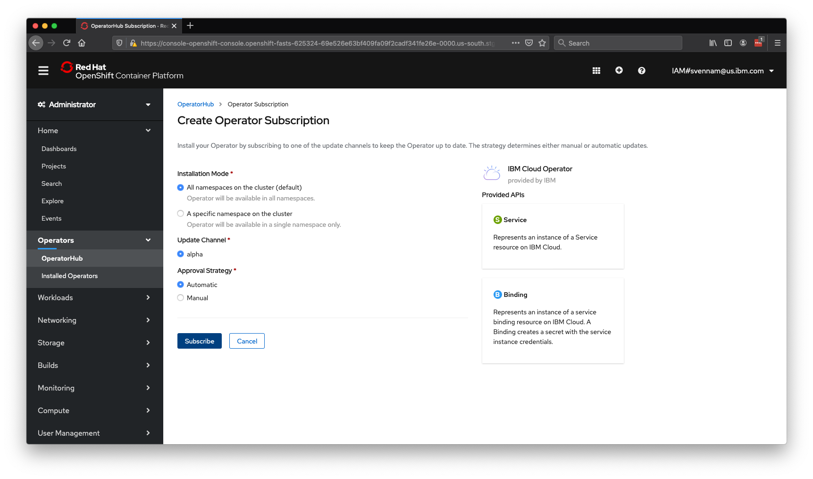
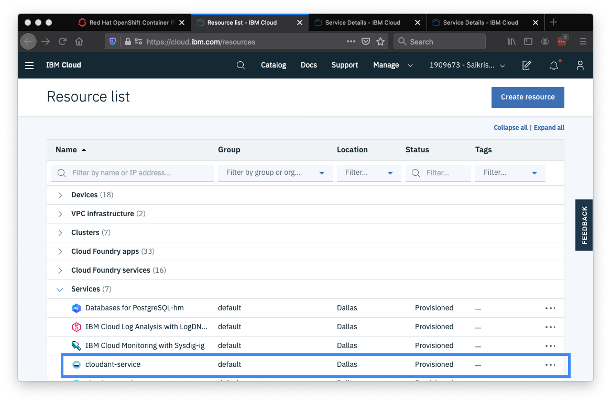
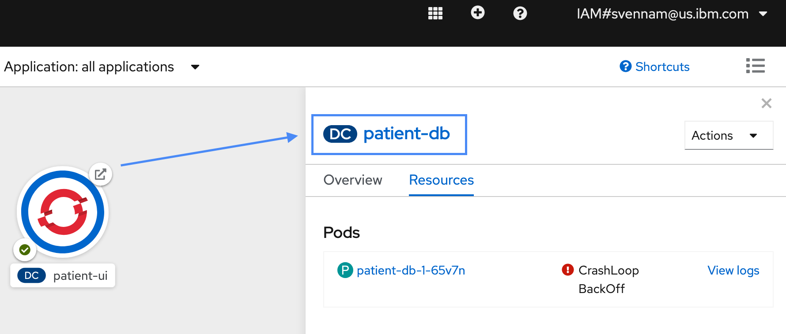
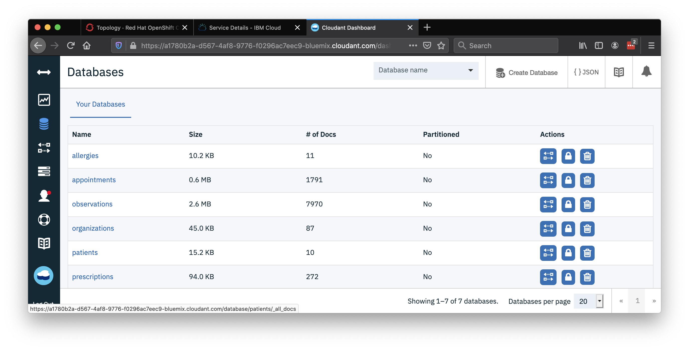
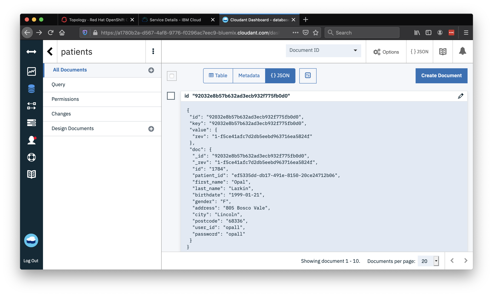

Cloudant DB with IBM Cloud Operator¶
Currently, the Example Health patient-ui app is using a dummy in-memory patient. In this exercise, you'll create a Cloudant service in IBM Cloud and populate it with patient data. Cloudant is a NoSQL database-as-a-service, based on CouchDB.
Enable the IBM Cloud Operator¶
Let's understand exactly how Operators work. In the first exercise, you deployed a simple application using a DeploymentConfig and Pods -- these are "default resources" that come with OpenShift. A custom resource definition allows you to create resources that are not necessarily running within Kubernetes, such an IBM Cloud service. Operators manage the lifecycle of resources and create CRDs, allowing you to manage custom resources the native "Kubernetes" way.
- Navigate to your OpenShift console, access the Administrator view, and click Operators > OperatorHub

- Find the IBM Cloud Operator, and hit Install

- Keep the default options and hit Subscribe:

- You may need to wait a few seconds and refresh for the operator to show up as
Installed:

- Next, you'll need to set your IBM Cloud credentials so that the Operator knows how/where to create your Cloudant service. The operator needs to create the service in your own account, rather than the shared IBM lab account.
ibmcloud login --sso
Remember: Pick your own account, not IBM.
Select an account:
1. Sai Vennam's Account (d815248d6ad0cc354df42d43db45ce09) <-> 1909673
2. IBM (3a4766a7bcab032d4ffc980d360fbf23) <-> 338150
Enter a number> 1
-
Next, set your CF org, space and resource group where the Cloudant service will be created. Resource group is usually named
defaultorDefault-- case-sensitive.ibmcloud target --cf -g Default or ibmcloud target --cf -g default -
Verify that all fields are set:
ibmcloud targetAPI endpoint: https://cloud.ibm.com Region: us-south User: svennam@us.ibm.com Account: Sai Vennam's Account (d815248d6ad0cc354df42d43db45ce09) <-> 1909673 Resource group: default CF API endpoint: https://api.us-south.cf.cloud.ibm.com (API version: 2.144.0) Org: svennam@us.ibm.com Space: dev
If any of these fields are not set, the Operator will fail to create your service!
-
Make sure you're logged in to the cluster in this terminal session. Otherwise you must re-run the command
oc loginwith the cluster information: -
Use the helper script provided by IBM to create a new API token, and register it as a secret in your OpenShift cluster:
curl -sL https://raw.githubusercontent.com/IBM/cloud-operators/master/hack/config-operator.sh | bash -
Verify that all the fields in
dataare set for the configmap \(org,region,resourceGroupandspace\) and secret \(api-keyandregion\):oc get configmap/seed-defaults -o yaml -n default oc get secret/seed-secret -o yaml -n defaultOutput:
apiVersion: v1 data: org: svennam@us.ibm.com region: us-south resourceGroup: default space: dev ... apiVersion: v1 data: api-key: <PRIVATE_API_TOKEN>= region: dXMtc291dGg= ...
Create a Cloudant Service using the CRDs¶
- Once the Operator is installed, the Custom Resource Definitions to create the Cloudant service are also available. Navigate to your OpenShift dashboard, ensure you're in the Administrator view, navigate to your Installed Operators and click the IBM Cloud Operator:

- You'll see that there's two APIs available -- a Service and a Binding. A Service will allow us to create the actual Cloudant service itself -- do that first by clicking Create Instance under Service. Copy and replace the following YAML:
apiVersion: ibmcloud.ibm.com/v1alpha1
kind: Service
metadata:
name: cloudant-service
spec:
plan: lite
serviceClass: cloudantnosqldb
Hit Create.
- Wait a couple minutes for the service to provision. You can check the status by clicking on your service, and looking for Message: Online:
{% hint style='info' %} You can also debug any potential issues here. If you already have a Cloudant "Lite" service, you won't be able to create another. To work around this issue, edit the service yaml to use standard instead of lite. Note that "Standard Cloudant" is a paid service. Another option is to navigate to your IBM Cloud dashboard and delete your existing instance of the lite Cloudant. {% endhint %}

- After verifying that there's no bugs and the service is "online", double-check that the Cloudant service exists in your account: https://cloud.ibm.com/resources
You may need to switch to your own account using the switcher on the top right.

- Next, create the "binding" resource for your Operator \(instead of Service as you did above\):
apiVersion: ibmcloud.ibm.com/v1alpha1
kind: Binding
metadata:
name: cloudant-binding
spec:
serviceName: cloudant-service

- The binding should get created fairly quickly -- you can check the status by clicking on your binding, and looking for Message: Online. By navigating to the Resources tab, you can see that the cloudant-binding secret is created. Click that to see your credentials for accessing your Cloudant DB, stored securely in a secret:

Deploy the Node.js Patient Database App¶
Now you'll create the Node.js app that will populate your Cloudant DB with patient data. It will also serve data to the front-end application that we deployed in the first exercise.
-
Make sure you're in the project example-health:
oc project example-health -
Run the following command to create this application:
oc new-app --name=patient-db centos/nodejs-10-centos7~https://github.com/svennam92/nodejs-patientdb-cloudant -
The app will crash and fail to start repeatedly because the credentials to the Cloudant DB haven't been set yet.

- Let's fix this by setting the environment variable to the cloudant-binding secret we created earlier. Navigate to the deployment config for the
patient-dbapp by clicking the app, and then selecting the name next to DC:

- Go to the Environment tab, click Add from Config Map or Secret and create a new environment variable named CLOUDANT_URL. Choose the cloudant-binding secret, then choose url for the Key. Hit the Save button.

- Go back to the Topology tab, and the patient-db should successfully start shortly.
Configure Front-End Patient Health App to use Cloudant Database Backend¶
The patient-ui application has a configuration option for the backend database. To start using the database you configured above, follow the steps below to configure it.
- Access your patient-ui application again and click Settings.
To find your routes, you can use the OpenShift console or type oc get routes.

- Input the route
http://patient-db:8080/and hit the node OpenShift icon.
You won't need to expose this application with the oc expose command. This is because your frontend patient-ui application can talk to the backend patient-db without the network request leaving the cluster. Kubernetes keeps an internal DNS record of the services which resolve to the IPs of the running application.

Your application is now backed by the mock patient data in the Cloudant DB! You can log-in using any user-id/password in the Cloudant DB, for example "opall:opall".
- In a real-world application, these passwords should not be stored as plain-text. To review the patients (and alternate logins) in the Cloudant DB, navigate to your services in IBM Cloud Resource List. Click cloudant-service.

- Launch the Cloudant dashboard and click the
patientsdb.

- Click through the different patients you can log-in as.
